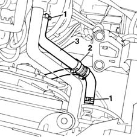
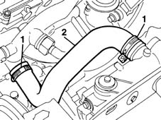

1088D10 lower sleeve for coolant outlet from radiator - r + r
- Path
- Procedures > 10 ENGINE UNIT > 1088 ENGINE COOLING > 1088D COOLANT HOSES AND SLEEVES > 1088D10 lower sleeve for coolant outlet from radiator - r + r
- Kind
- repair procedure (removal / refitting; the operation number is the code)
- Applies to
- all engines; all production periods
- Interactive page
- https://sloeber94.github.io/elrnDB-fMltpl/en/#/2891332
Applies to: engines: 1.6 16v; all production periods
 Removing
Removing
 Refitting
Refitting1048A10 AIR CLEANER FILTERING ELEMENT - REPLACE
Position a suitable container for recovering the coolant fluid.
1. Disconnect the collars from the radiator and thermostat.
2. Disconnect the collar from the T-fitting on the expansion tank hose.
3. Remove the lower coolant hose.

Applies to: engines: 1.6 16v; all production periods
Refitting
RemovingCheck the condition of the hose.
Connect the hose to the radiator and thermostat.
Ensure that the grooves on the hose fit over the ridges on the rigid pipe sections on the radiator and thermostat.
Connect the expansion tank house to the T-fitting on the lower radiator hose.
Secure the hose using new collars.
- 1088A10 Engine COOLANT - Check density' and top up level, if necessary
Applies to: engines: 1.9 JTD 8V; all production periods
Removing
RefittingPosition a suitable container for recovering the coolant fluid.
Unscrew the drain plug in the lower part of the radiator.
1. Disconnect the clamps
2. Remove the lower coolant hose.

Applies to: engines: 1.9 JTD 8V; all production periods
Refitting
RemovingCheck the condition of the hose.
Connect the hose to the radiator and the rigid pipe.
Ensure that the grooves on the hose fit over the ridges on the rigid pipe sections on the radiator and thermostat.
Secure the hose using new collars.
- 1088A10 Engine COOLANT - Check density' and top up level, if necessary